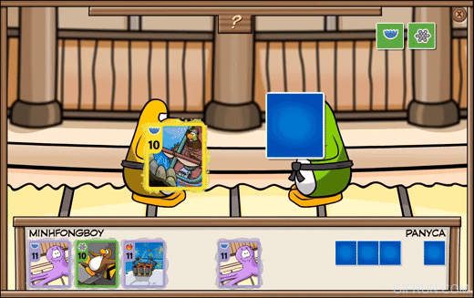
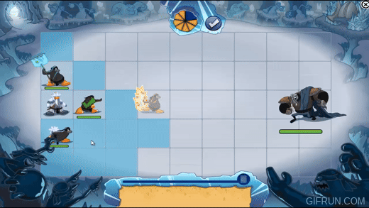
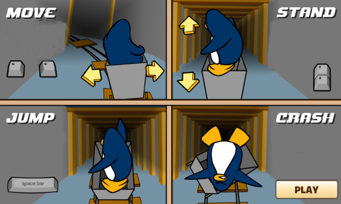
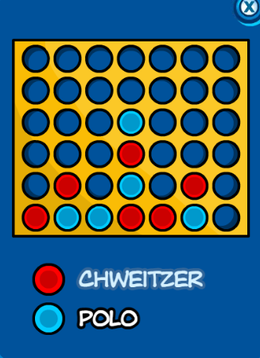
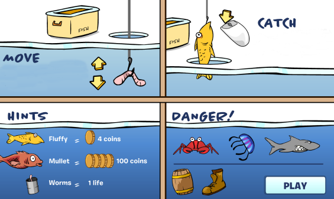
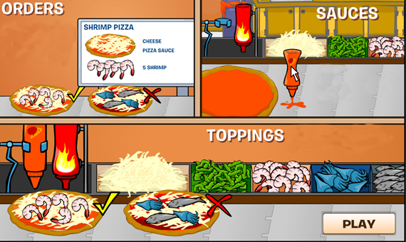

JOGOS

DESAFIO NINJA
Para começar a jogar, é necessário encontrar o Sensei e receber um conjunto inicial de
cartas que contém nove cartas básicas representando os três elementos, além de uma ou
duas
Cartas Especiais de elementos aleatórios. Após isso, há a opção de buscar a conquista
das
faixas com o Sensei ou desafiar outros jogadores nos tatames.
O funcionamento do jogo segue um padrão similar ao do jogo pedra-papel-tesoura: a cada
rodada, os jogadores escolhem uma carta de seu conjunto disponível. As cartas de fogo
superam as de gelo, as de gelo superam as de água e as de água superam as de fogo. Caso
as
cartas sejam do mesmo elemento, a carta com o valor numérico mais alto prevalece. Se
forem
do mesmo elemento e valor, não há um vencedor claro. Após utilizar uma carta, ela é
substituída por outra do conjunto do jogador.

Para vencer a partida, é necessário ganhar três rodadas com cartas do mesmo elemento, mas de cores distintas, ou cartas de elementos diferentes e cores diferentes. À medida que o jogador conquista mais partidas, progride em direção a receber mais faixas. Somente após obter a Faixa Preta, é possível desafiar e vencer o Sensei, tornando-se um Ninja; antes disso, o jogo não permite a vitória sobre o Sensei.DESAFIO NINJA DE FOGO
O objetivo principal deste jogo é manter as energias, já que o pinguim que esgotar suas
energias, chegando a 0, é o perdedor. Este jogo se assemelha bastante ao Desafio-Ninja,
mas
oferece opções para jogar focando em apenas um elemento. Os primeiros pinguins que
chegam ao
tatame têm prioridade para iniciar o jogo. O jogador inicial seleciona uma pedra que, ao
ser
ativada, revela três elementos: água, fogo e neve.
Quando esses elementos são lançados, o pinguim que escolheu a carta com o valor mais
alto
vence, e os demais perdem 1 energia cada. Em caso de empate, os pinguins empatados
mantêm
sua energia inalterada. Se um pinguim não possuir a carta com o elemento indicado, ele
pode
usar qualquer outra carta, mas automaticamente perde a rodada.
 Além disso, existem outras duas pedras disponíveis: uma que contém os três elementos
(permitindo a escolha de qualquer um deles) e outra, chamada de Pedra Desafio-Ninja, que
desafia outro jogador. Se um pinguim cair na mesma pedra que outro jogador, ocorre um
confronto entre os dois.
Além disso, existem outras duas pedras disponíveis: uma que contém os três elementos
(permitindo a escolha de qualquer um deles) e outra, chamada de Pedra Desafio-Ninja, que
desafia outro jogador. Se um pinguim cair na mesma pedra que outro jogador, ocorre um
confronto entre os dois.
DESAFIO NINJA DA AGUA
Os jogadores de pinguim navegavam por uma série de ladrilhos de pedra em um rio em
direção a
uma cachoeira, cada um contendo obstáculos de fogo, água ou neve. Em vez de lutar,
competiam
para alcançar um gongo no início do rio, usando cartas para superar obstáculos ou
sabotar os
oponentes, evitando cair da beira da cachoeira.
 As cartas do baralho eram apresentadas na tela por um tempo limitado, e os jogadores
precisavam usá-las estrategicamente para remover os obstáculos elementais dos ladrilhos.
Cada carta tinha um número, sendo mais vantajoso usar cartas com números maiores para
eliminar um obstáculo de uma vez, enquanto cartas com números menores diminuíam o
obstáculo,
exigindo mais cartas para removê-lo.
As cartas do baralho eram apresentadas na tela por um tempo limitado, e os jogadores
precisavam usá-las estrategicamente para remover os obstáculos elementais dos ladrilhos.
Cada carta tinha um número, sendo mais vantajoso usar cartas com números maiores para
eliminar um obstáculo de uma vez, enquanto cartas com números menores diminuíam o
obstáculo,
exigindo mais cartas para removê-lo.
Estratégias podiam ser empregadas para fortalecer obstáculos no caminho dos oponentes,
mas
isso podia também atrapalhar o próprio progresso. A chegada ao gongo ou a queda de todos
os
outros jogadores da cachoeira garantiam a vitória. A proximidade dos jogadores em
relação ao
gongo antes de ser atingido determinava suas posições finais, com vantagem para quem
estivesse mais à esquerda na tela em caso de empate de proximidade.
DESAFIO NINJA DA NEVE
Antes do início do jogo, cada jogador precisa escolher um dos elementos (fogo, água ou neve) para representar e aguardar que outros dois jogadores escolham os elementos restantes. A ação ocorre em um campo de neve localizado no topo de uma montanha, dividido em uma grade de 5x9 quadrados, similar a um tabuleiro de xadrez. Os jogadores ocupam o lado direito do campo, enquanto os vilões surgem do lado esquerdo. Caso um quadrado esteja colorido em azul, o jogador pode movimentar-se até ali. O objetivo dos jogadores é avançar pelo campo, buscando se aproximar ao máximo dos vilões para atacá-los e eliminá-los. Há também a possibilidade de utilizar...

Quando a barra de vida de um jogador se esgota, ele fica incapacitado de realizar movimentos ou ataques até que recupere alguma energia ou receba ajuda de outro jogador. Se a barra de energia dos vilões se esgotar, eles desaparecem do campo. Ao eliminar todos os vilões, os jogadores avançam para a próxima fase.CART SURFER
Dentro do jogo o usuário tem que utilizar as setas para inclinar ou mudar de posição no carrinho da mina, também é possível apertar espaço para fazer manobras, buscando fazer a maior quantidade de pontos possível. Porém caso você incline demais nas curvas ou nas retas você cairá do carrinho.

Connect four

Esse é um jogo de jogador contra jogador, onde o objetivo dele é fazer uma sequência de 4 linhas primeiro, sejam elas verticais horizontais ou diagonais.DANCE CONTEST
Esse é um jogo de ritmo onde você deveria apertar as setas do teclado no momento certo,
fazendo isso conseguirá pontos e combos. Existe 1 variação de seta onde ela deve ser
pressionada continuamente até o final.

ICE FISHING
No jogo da pesca o usuário tinha que mover o mouse para cima e para baixo para jogar a isca, buscando pegar a maior quantidade possível de peixes. O jogo tinha obstáculos como a bota e o barril, que espantavam os peixes, e o caranguejo, a água viva e o tubarão, que faziam você perder 1 vida. O jogo tinha um final onde você pescava o mullet, usando peixes menores como isca.

PIZZATRON
Esse jogo pedidos chegavam até você, onde o usuário teria que montar as pizzas enquanto elas passam por uma esteira, para montar as pizzas era necessário apenas pegar os ingredientes e jogar por cima com o mouse.

CATCHIN' WAVES
Esse jogo tinha mecânicas bem únicas, você utilizava o mouse para guiar o penguin para pegar
as maiores ondas, procurando pular o mais alto possível e fazendo diversas manobras
diferentes, utilizando botões como o espaço para um backflip, o WASD para ficar só em uma
mão na prancha, de ponta cabeça etc. Tudo para pegar a maior quantidade de pontos possíveis